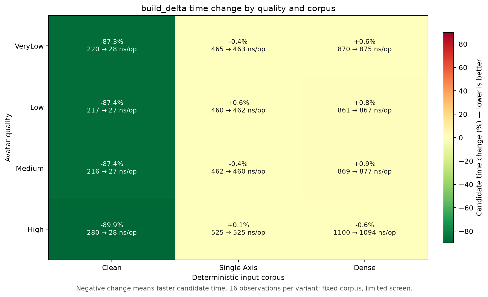
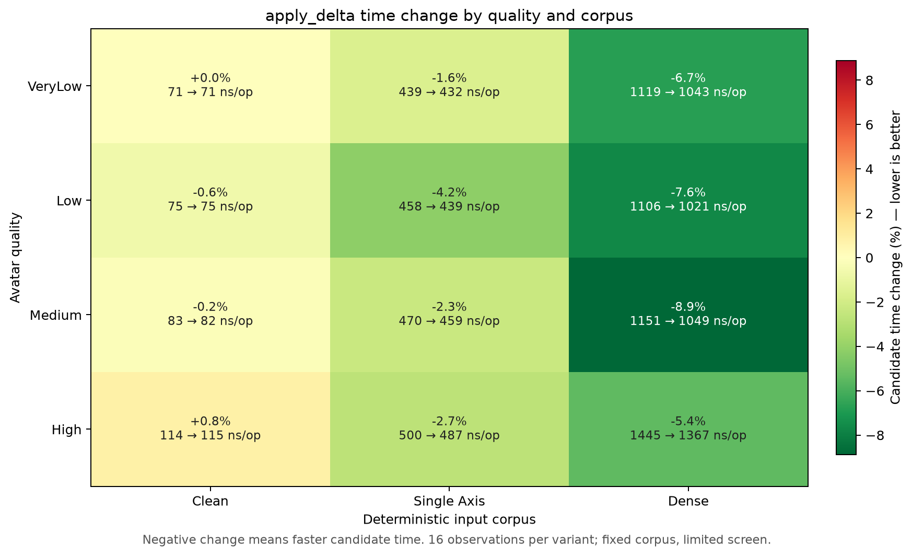
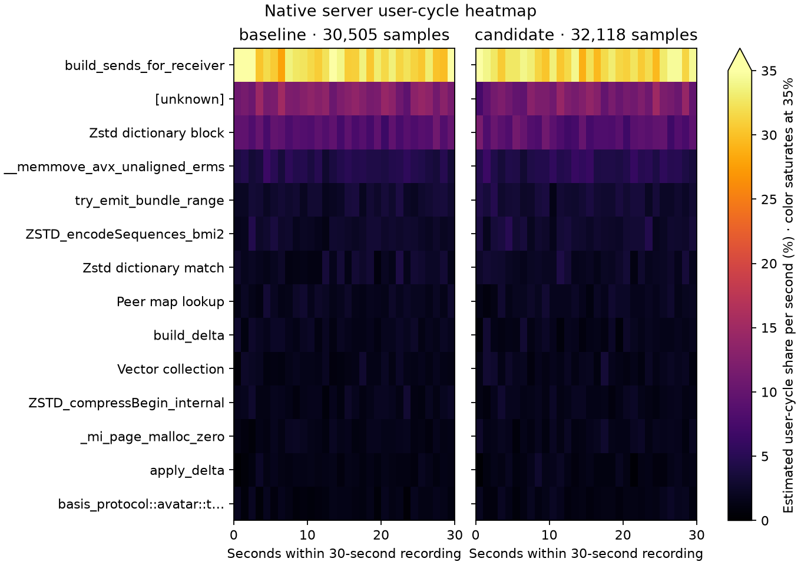
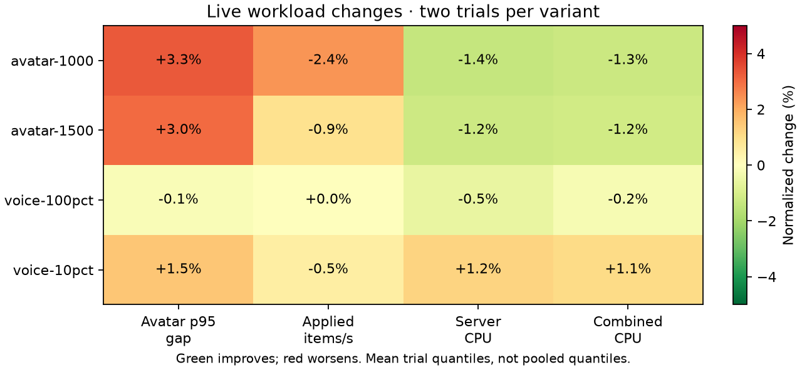
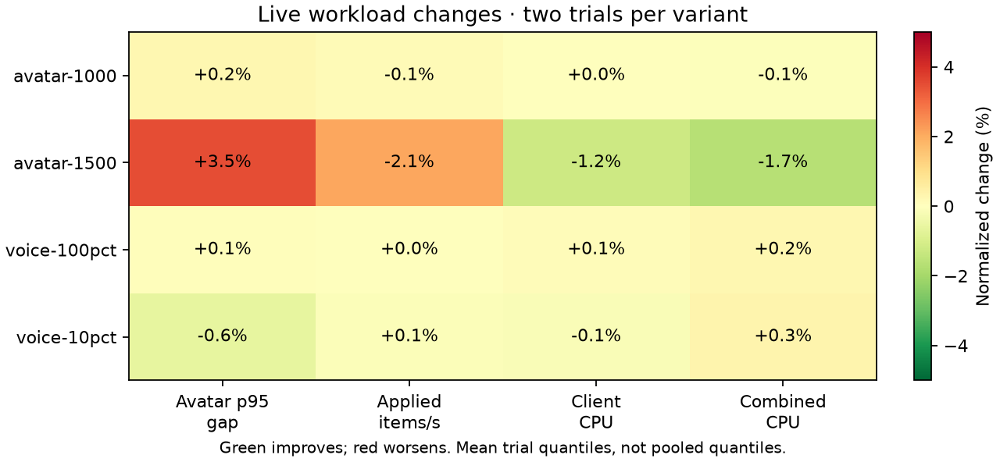
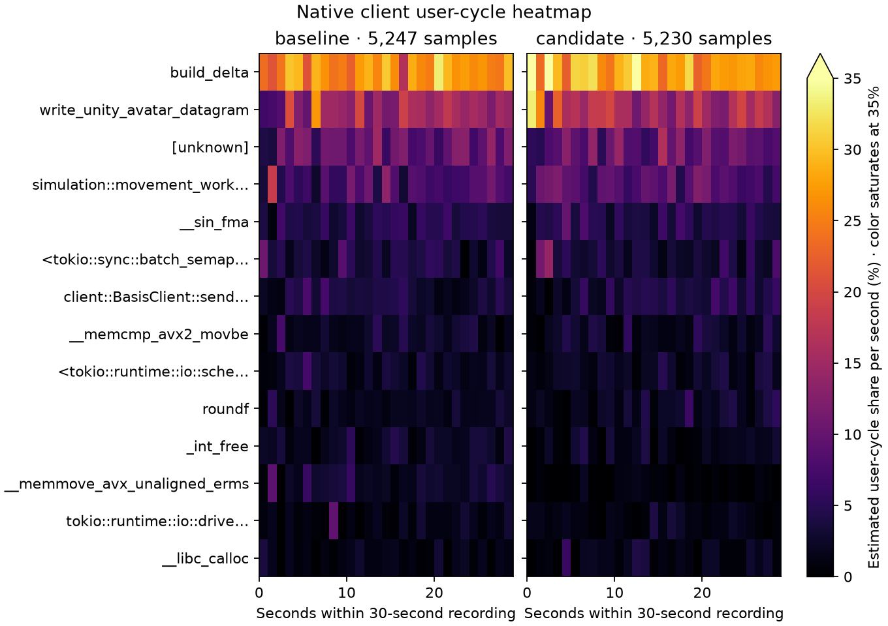
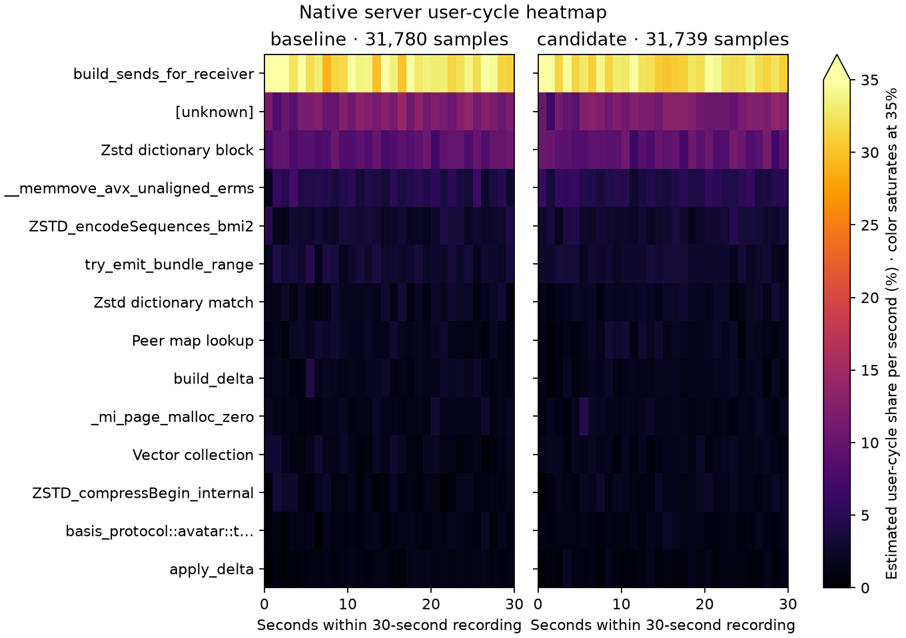

Controlled comparisons with delivery, coverage and error checks. Gains belong to separate experiments and must not be added together.
| Change | Measured evidence | Limit |
|---|---|---|
| Borrowed payload ownership | Clone/drop profile share 6.58% → 1.21% | 1,500-avatar p95 −3.6% |
| Shared membership snapshot | 1,500-avatar p95 −5.94%, delivered items +4.98% | Matched Linux workload |
| Quaternion byte packing | 415.5 → 48.3 ns | Targeted packer cost |
| Bulk residual writer | Dense encoding −28.3% to −76.8% | No general process CPU claim |
| Exact-clean delta shortcut | Clean encoding −87.3% to −89.9% | Combined live delivery close to flat |
| Direct single-bit decoder | Dense decoding −5.45% to −8.87% | 1,500-avatar p95 −3.90%, items +3.36%; server CPU +1.96% |

16 observations per variant, four qualities and three fixed corpora. Byte/decoder checks and equal work counts pass.


16 corpus observations per variant. Native user-cycle samples 30,505 / 32,118; zero lost. Decoder leaf shares 2.11% → 1.38%; unknown symbols remain in the denominator.

A second matched cohort on the retained decoder again loses 1,000-avatar delivery: items −2.38%, p95 +3.32% in both orders. Source reverted.
| Candidate | Reason |
|---|---|
| Receiver index | 1,500-avatar p95 +3.45%; delivered items −2.33% |
| Reusable voice datagram | Overload avatar delivery −21.72%; client CPU close to flat |
| Zstd Vec destination | Server CPU −1.96%, delivered items −3.77%; p95 +3.47% |
| Channel bitset | Repeated 1,000-avatar delivery loss; confirmed rejection |
| Client payload borrow | Serializer −2.79%, but 1,500-avatar delivery −2.08%; p95 +3.50% |
These changes were reverted. Correctness alone does not establish a useful performance gain.


16 live captures pass measured error/coverage checks. Client native samples 5,247 / 5,230, zero lost. The change was reverted; next proposals remain unapplied.

31,780 / 31,739 user-cycle samples; zero lost. Unknown symbols remain in the denominator. Relative shares are not absolute CPU savings.
Stopped after the matched client experiment at Marcus’s request. Muse Spark reviewed proposals. Frozen builds, commands, trial identities, raw perf data, PNG/SVG figures and full reports are retained. Voice uses real preencoded mono 20 ms Opus clips derived from the supplied local corpus.